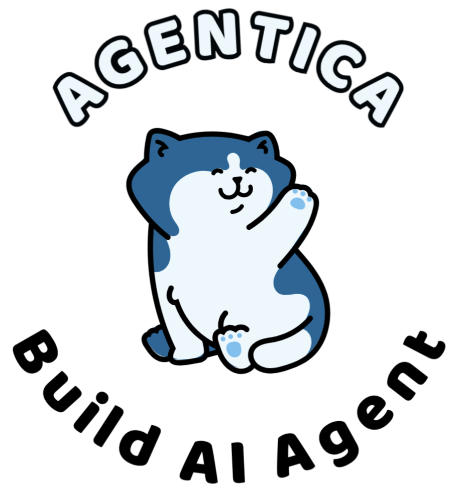
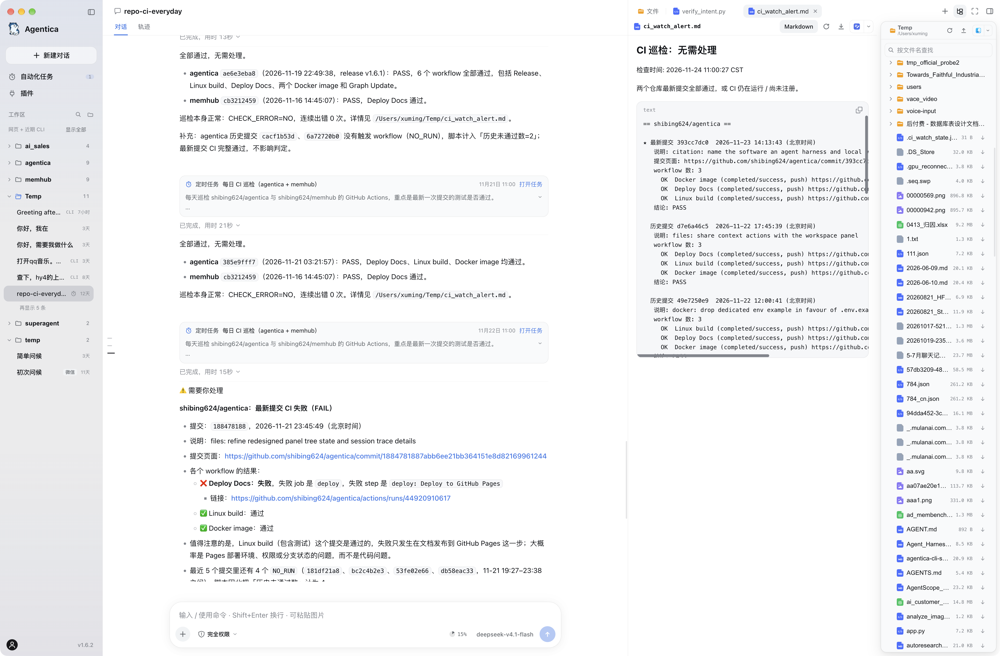

macOS 说「已损坏，无法打开」
把 Agentica.app 拖进「应用程序」，然后在终端执行一次：
sudo xattr -rd com.apple.quarantine /Applications/Agentica.app

正在读取最新版本…

| 系统 | 安装包 |
|---|---|
| macOS 11+ | Apple 芯片 · Intel |
| Windows 10+ | x64 安装包 |
| Linux x64 | AppImage · deb |
安装包目前没有签名。系统拦一次，按你的系统做完下面这一步就可以了。
把 Agentica.app 拖进「应用程序」，然后在终端执行一次：
sudo xattr -rd com.apple.quarantine /Applications/Agentica.app
点「更多信息」，再点「仍要运行」。
先给它执行权限。deb 不用这一步。
chmod +x Agentica-x86_64.AppImage